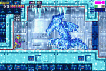

You go back through the door and see the
creature has dissappeared. No matter you must continue to find the
metroid. You sprint across the room and through the next door. What you
find here is almost
worse than the creature in the last room. Ridley is in a stasis capsule.
Step carefully you do NOT want to free
him . Definitely not here. You cross the room and see there is
something in
a capsule. You can reach for it ,
however there is a tiny lizard-like creature in there. It is in a
stasis but opening the capsule would change that VERY quickly. Studying
the creature you realize it looks sorta.....familiar.......no it can't
be. Let's move on . You have choices to
make so go ahead. Choose your path Bounty Bounty Hunter.